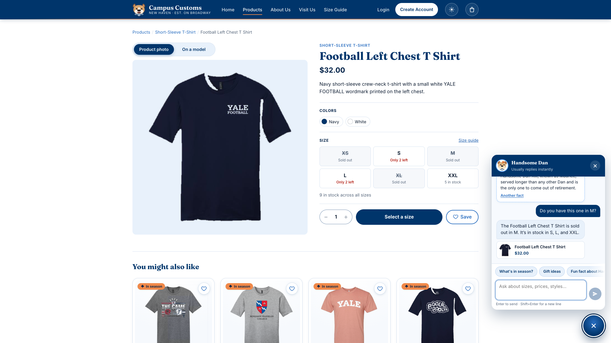
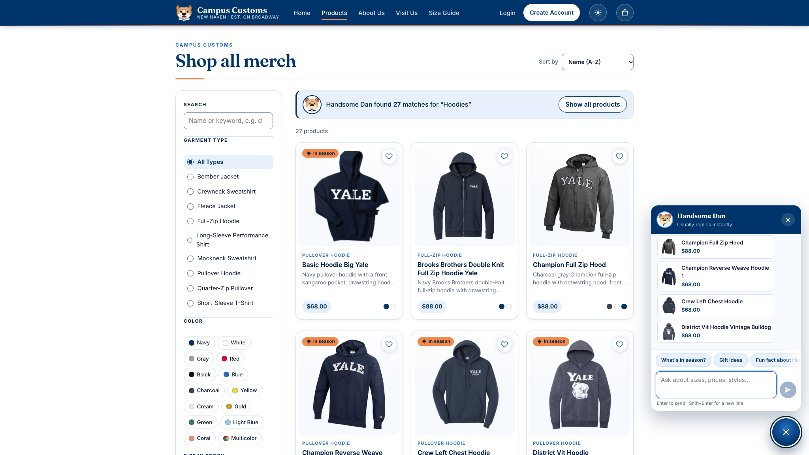
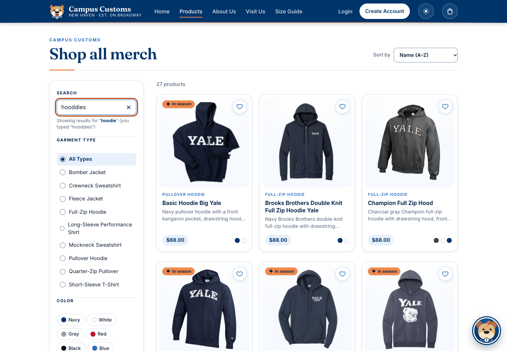

| Check | What was tested | Result |
|---|---|---|
| A | Inventory level on the product page and in Dan's answer | PASS |
| B | A category question ("hoodies") makes product cards appear on the page | PASS |
| C | Problem 9 usability: typo-tolerant live search | PASS |
Check A
Inventory level is shown correctly
On the Football Left Chest T Shirt page, the size grid shows stock for each size. I asked Handsome Dan "Do you have this one in M?" from that page. He answered from the live database: "The Football Left Chest T Shirt is sold out in M. It's in stock in S, L, and XXL."

| Size | On the page | Database (inventory.quantity) |
|---|---|---|
| XS | Sold out | 0 |
| S | Only 2 left | 2 |
| M | Sold out | 0 |
| L | Only 2 left | 2 |
| XL | Sold out | 0 |
| XXL | 5 in stock | 5 |
| Total | 9 in stock across all sizes | 9 |
What this proves: The page and the AI agent both report the real stock from the database, size by size. Sold-out sizes are shown as sold out, not hidden or invented. Dan also used the page context: "this one" correctly meant the product on screen.
Check B
Dynamic search: a category question puts product cards on the page
On the Products page I asked Handsome Dan "What hoodies do you have?". He replied: "We have 27 hoodies, including pullover and full-zip styles, team designs, and family picks…". The page then switched to his results, with the banner "Handsome Dan found 27 matches for 'Hoodies'" and 27 product cards.

| Page address after the answer | /products?ids=…&chat=Hoodies with 27 product IDs |
| Cards on the page | 27 |
| Database | 27 hoodies: 25 pullover hoodie + 2 full-zip hoodie |
What this proves: The agent returns structured matches (product IDs), and the website turns them into product cards on the page. This is the API contract from Problem 7 working end to end. The number of cards matches the database exactly, and each card links to that product's detail page.
Check C · Problem 9 usability feature
Typo-tolerant, live product search
On the Products page I typed hooddies, misspelled, one letter at a time. The results updated as I typed. The page explained the fix, "Showing results for 'hoodie' (you typed 'hooddies')", and listed 27 products.

| Typed | hooddies |
| Corrected to | hoodie (shown to the shopper) |
| Results | 27 products, the same as the correct spelling "hoodie" |
What this proves: The Problem 9 search improvement works in the live app. Misspellings are corrected against the catalogue's own words, results update while typing, and a shopper who types fast still finds the products instead of a "no results" dead end.